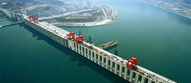
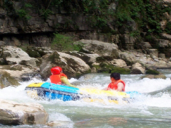
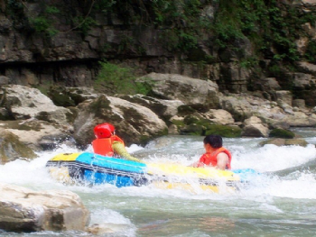

风景名胜
清江画廊


清江画廊风景区位于三峡・宜昌的长阳土家族自治县，涵盖隔河岩大坝以上至水布垭盐池温泉，沿清江一线的所有旅游景观及景区景点。当前重点打造的是倒影峡、仙人寨、武落钟离山等三大景点。清江画廊风景区属湖北省省级风景名胜区和旅游度假区，也是国家林业局批准建设的国家森林公园和湖北省旅游局命名的全省四大甲级旅游风景区之一。
《水经注》记载：“……水色清照十丈，分沙砾。蜀人见其澄清，因名清江。” 清江是土家人的母亲河，洋洋洒洒八百里，宛如一条蓝色飘带，穿山越峡，自利川市齐跃山发源逶迤西去，横贯鄂西南10多个县市。随着隔河岩、高坝洲、水布垭三级水利枢纽工程的相继建成，长阳占据地理位置上的优势，在其境内形成了“一坝（隔河岩大坝）两库（隔河岩库区、高坝洲库区）”的独特旅游资源。水域面积的扩大，百岛沉浮风光的凸现，使得清江长阳秀丽的山水风光更显妖娆。清江自历史的发迹，留到今天，养育了多少“靠山吃山，靠水吃水”的土家儿女，也孕育了山歌、南曲及国家非物质文化遗产保护项目撒叶儿嗬等灿烂的土家民间文化。
“八百里清江美如画，三百里画廊在长阳”。清江是一首抒情的诗、是一曲优美的歌、更是一幅迷人的画。三百里的清江画廊，境内峰峦叠嶂，数百翡翠般的岛屿星罗棋布，灿若绿珠。犹如黛江水烟波浩渺，高峡绿林曲径通幽。人称清江有长江三峡之雄，桂林漓江之清，杭州西湖之秀。这里被赞为东方的多瑙河,被称为桨声灯影的梦乡！
三峡大坝



三峡水电站，即长江三峡水利枢纽工程，又称三峡工程。中国湖北省宜昌市境内的长江西陵峡段与下游的葛洲坝水电站构成梯级电站。
三峡水电站是世界上规模最大的水电站，也是中国有史以来建设最大型的工程项目。而由它所引发的移民搬迁、环境等诸多问题，使它从开始筹建的那一刻起，便始终与巨大的争议相伴。三峡水电站的功能有十多种，航运、发电、种植等等。三峡水电站1992年获得中国全国人民代表大会批准建设，1994年正式动工兴建，2003年六月一日下午开始蓄水发电，于2009年全部完工。
机组设备主要由德国伏伊特(VOITH)公司、美国通用电气(GE)公司、德国西门子(SIEMENS)公司组成的VGS联营体和法国阿尔斯通(ALSTOM)公司、瑞士ABB公司组成的ALSTOM联营体提供。它们在签订供货协议时，都已承诺将相关技术无偿转让给中国国内的电机制造企业。三峡水电站的输变电系统由中国国家电网公司负责建设和管理，预计共安装15回500千伏高压输电线路连接至各区域电网。
三峡水电站大坝高程185米，蓄水高程175米，水库长2335米，总投资954.6亿元人民币，安装32台单机容量为70万千瓦的水电机组。三峡电站最后一台水电机组，2012年7月4日投产，这意味着，装机容量达到2240万千瓦的三峡水电站，2012年7月4日已成为全世界最大的水力发电站和清洁能源生产基地。
丹水漂流
丹水是长阳土家族自治县境内清江最大的支流，发源于贺家坪镇的跌马坡，全长71公里，在津洋口镇注入清江。因水流穿越峡谷，多雾气，每当朝阳升起和日落西山之时，将雾气照得呈现红色，故名丹水。
目前开发出可漂的一段在高家堰境内，是丹水的中游。这一段溪流宽约三十米。坐在小溪边，身下是五颜六色的鹅卵石，其水清澈见底。右岸陡壁耸峙，左岸三一八国道傍溪而行。繁闹中显宁静，红尘中出净土，感觉真是好极了。
丹水漂流是一人或者二人乘坐一艘橡皮小舟，手握一块一米长的木桨，自己划桨，自由放漂，过激流，经险滩，回旋于巨石之间，跌荡于碧潭之中。在左躲右闪、惊涛险浪之中领略与大自然博斗的快感。

三峡水电站，即长江三峡水利枢纽工程，又称三峡工程。中国湖北省宜昌市境内的长江西陵峡段与下游的葛洲坝水电站构成梯级电站。
三峡水电站是世界上规模最大的水电站，也是中国有史以来建设最大型的工程项目。而由它所引发的移民搬迁、环境等诸多问题，使它从开始筹建的那一刻起，便始终与巨大的争议相伴。三峡水电站的功能有十多种，航运、发电、种植等等。三峡水电站1992年获得中国全国人民代表大会批准建设，1994年正式动工兴建，2003年六月一日下午开始蓄水发电，于2009年全部完工。
机组设备主要由德国伏伊特(VOITH)公司、美国通用电气(GE)公司、德国西门子(SIEMENS)公司组成的VGS联营体和法国阿尔斯通(ALSTOM)公司、瑞士ABB公司组成的ALSTOM联营体提供。它们在签订供货协议时，都已承诺将相关技术无偿转让给中国国内的电机制造企业。三峡水电站的输变电系统由中国国家电网公司负责建设和管理，预计共安装15回500千伏高压输电线路连接至各区域电网。
三峡水电站大坝高程185米，蓄水高程175米，水库长2335米，总投资954.6亿元人民币，安装32台单机容量为70万千瓦的水电机组。三峡电站最后一台水电机组，2012年7月4日投产，这意味着，装机容量达到2240万千瓦的三峡水电站，2012年7月4日已成为全世界最大的水力发电站和清洁能源生产基地。
丹水漂流
丹水是长阳土家族自治县境内清江最大的支流，发源于贺家坪镇的跌马坡，全长71公里，在津洋口镇注入清江。因水流穿越峡谷，多雾气，每当朝阳升起和日落西山之时，将雾气照得呈现红色，故名丹水。
目前开发出可漂的一段在高家堰境内，是丹水的中游。这一段溪流宽约三十米。坐在小溪边，身下是五颜六色的鹅卵石，其水清澈见底。右岸陡壁耸峙，左岸三一八国道傍溪而行。繁闹中显宁静，红尘中出净土，感觉真是好极了。
丹水漂流是一人或者二人乘坐一艘橡皮小舟，手握一块一米长的木桨，自己划桨，自由放漂，过激流，经险滩，回旋于巨石之间，跌荡于碧潭之中。在左躲右闪、惊涛险浪之中领略与大自然博斗的快感。

丹水是长阳土家族自治县境内清江最大的支流，发源于贺家坪镇的跌马坡，全长71公里，在津洋口镇注入清江。因水流穿越峡谷，多雾气，每当朝阳升起和日落西山之时，将雾气照得呈现红色，故名丹水。
目前开发出可漂的一段在高家堰境内，是丹水的中游。这一段溪流宽约三十米。坐在小溪边，身下是五颜六色的鹅卵石，其水清澈见底。右岸陡壁耸峙，左岸三一八国道傍溪而行。繁闹中显宁静，红尘中出净土，感觉真是好极了。
丹水漂流是一人或者二人乘坐一艘橡皮小舟，手握一块一米长的木桨，自己划桨，自由放漂，过激流，经险滩，回旋于巨石之间，跌荡于碧潭之中。在左躲右闪、惊涛险浪之中领略与大自然博斗的快感。